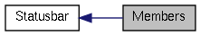

|
Cream-Browser unstable
|
|
Cream-Browser unstable
|
|  |
Functions | |
| void | Statusbar::statusbar_set_state (Statusbar *obj, CreamMode state) |
| void | Statusbar::statusbar_set_link (Statusbar *obj, const gchar *link) |
| void | Statusbar::statusbar_set_history (Statusbar *obj, gboolean can_go_back, gboolean can_go_forward) |
| void | Statusbar::statusbar_set_scroll (Statusbar *obj, gdouble progress) |
| void | Statusbar::statusbar_set_progress (Statusbar *obj, gdouble fraction) |
| void statusbar_set_history | ( | Statusbar * | obj, |
| gboolean | can_go_back, | ||
| gboolean | can_go_forward | ||
| ) |
| obj | A Statusbar object. |
| can_go_back | If TRUE, we can go back in history. |
| can_go_forward | If TRUE, we can go forward in history. |
Display history indicator in statusbar.
| void statusbar_set_link | ( | Statusbar * | obj, |
| const gchar * | link | ||
| ) |
| obj | A Statusbar object. |
| link | URL to print in statusbar. |
Set link in statusbar.
| void statusbar_set_progress | ( | Statusbar * | obj, |
| gdouble | fraction | ||
| ) |
| obj | A Statusbar object. |
| fraction | Loading percent. |
Display a download bar.
| void statusbar_set_scroll | ( | Statusbar * | obj, |
| gdouble | progress | ||
| ) |
| obj | A Statusbar object. |
| progress | Scrolling percent. |
Set scrolling percent.
 1.7.4
1.7.4